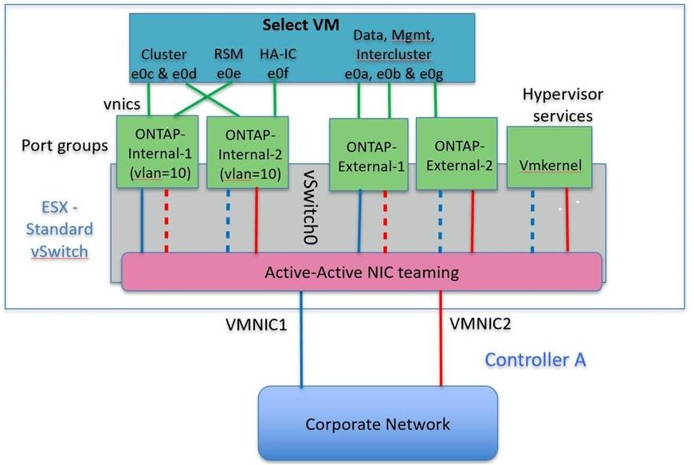

VMWare vSphere vSwitch Configuration
Contributors
 Download PDF of this page
Download PDF of this page
ONTAP Select vSwitch configuration and load-balancing policies for two-NIC and four-NIC configurations.
ONTAP Select supports the use of both standard and distributed vSwitch configurations. Distributed vSwitches support link aggregation constructs (LACP). Link aggregation is a common network construct used to aggregate bandwidth across multiple physical adapters. LACP is a vendor-neutral standard that provides an open protocol for network endpoints that bundle groups of physical network ports into a single logical channel. ONTAP Select can work with port groups that are configured as a Link Aggregation Group (LAG). However, NetApp recommends using the individual physical ports as simple uplink (trunk) ports to avoid the LAG configuration. In these cases, the best practices for standard and distributed vSwitches are identical.
This section describes the vSwitch configuration and load-balancing policies that should be used in both two-NIC and four-NIC configurations.
When configuring the port groups to be used by ONTAP Select, the following best practices should be followed; the load-balancing policy at the port-group level is Route Based on Originating Virtual Port ID. VMware recommends that STP be set to Portfast on the switch ports connected to the ESXi hosts.
All vSwitch configurations require a minimum of two physical network adapters bundled into a single NIC team. ONTAP Select supports a single 10Gb link for two-node clusters. However, it is a NetApp best practice to make sure of hardware redundancy through NIC aggregation.
On a vSphere server, NIC teams are the aggregation construct used to bundle multiple physical network adapters into a single logical channel, allowing the network load to be shared across all member ports. It’s important to remember that NIC teams can be created without support from the physical switch. Load-balancing and failover policies can be applied directly to a NIC team, which is unaware of the upstream switch configuration. In this case, policies are only applied to outbound traffic.
| Static port channels are not supported with ONTAP Select. LACP-enabled channels are supported with distributed vSwitches but using LACP LAGs may result in un-even load distribution across the LAG members. |
For single node clusters, ONTAP Deploy configures the ONTAP Select VM to use a port group for the external network and either the same port group or, optionally, a different port group for the cluster and node management traffic. For single node clusters, the desired number of physical ports can be added to the external port group as active adapters.
For multinode clusters, ONTAP Deploy configures each ONTAP Select VM to use one or two port groups for the internal network and separately, one or two port groups for the external network. The cluster and node management traffic can either use the same port group as the external traffic, or optionally a separate port group. The cluster and node management traffic cannot share the same port group with internal traffic.
Standard or distributed vSwitch and four physical ports per Node
Four port groups can be assigned to each node in a multinode cluster. Each port group has a single active physical port and three standby physical ports as in the following figure.
vSwitch with four physical ports per node

The order of the ports in the standby list is important. The following table provides an example of the physical port distribution across the four port groups.
Network minimum and recommended configurations
| Port Group | External 1 | External 2 | Internal 1 | Internal 2 |
|---|---|---|---|---|
Active |
vmnic0 |
vmnic1 |
vmnic2 |
vmnic3 |
Standby 1 |
vmnic1 |
vmnic0 |
vmnic3 |
vmnic2 |
Standby 2 |
vmnic2 |
vmnic3 |
vmnic0 |
vmnic1 |
Standby 3 |
vmnic3 |
vmnic2 |
vmnic1 |
vmnic0 |
The following figures show the configurations of the external network port groups from the vCenter GUI (ONTAP-External and ONTAP-External2). Note that the active adapters are from different network cards. In this setup, vmnic 4 and vmnic 5 are dual ports on the same physical NIC, while vmnic 6 and vminc 7 are similarly dual ports on a separate NIC (vnmics 0 through 3 are not used in this example). The order of the standby adapters provides a hierarchical fail over with the ports from the internal network being last. The order of internal ports in the standby list is similarly swapped between the two external port groups.
Part 1: ONTAP Select external port group configurations

Part 2: ONTAP Select external port group configurations

For readability, the assignments are as follows:
| ONTAP-External | ONTAP-External2 |
|---|---|
Active adapters: vmnic5 |
Active adapters: vmnic7 |
The following figures show the configurations of the internal network port groups (ONTAP-Internal and ONTAP-Internal2). Note that the active adapters are from different network cards. In this setup, vmnic 4 and vmnic 5 are dual ports on the same physical ASIC, whereas vmnic 6 and vmnic 7 are similarly dual ports on a separate ASIC. The order of the standby adapters provides a hierarchical fail over with the ports from the external network being last. The order of external ports in the standby list is similarly swapped between the two internal port groups.
Part 1: ONTAP Select internal port group configurations

Part 2: ONTAP Select internal port groups

For readability, the assignments are as follows:
| ONTAP-Internal | ONTAP-Internal2 |
|---|---|
Active adapters: vmnic4 |
Active adapters: vmnic6 |
Standard or distributed vSwitch and two physical ports per node
When using two high speed (25/40Gb) NICs, the recommended port group configuration is conceptually very similar to the configuration with four 10Gb adapters. Four port groups should be used even when using only two physical adapters. The port group assignments are as follows:
| Port Group | External 1 (e0a,e0b) | Internal 1 (e0c,e0e) | Internal 2 (e0d,e0f) | External 2 (e0g) |
|---|---|---|---|---|
Active |
vmnic0 |
vmnic0 |
vmnic1 |
vmnic1 |
Standby |
vmnic1 |
vmnic1 |
vmnic0 |
vmnic0 |
vSwitch with two high speed (25/40Gb) physical ports per node

When using two physical ports (10Gb or less), each port group should have an active adapter and a standby adapter configured opposite to each other. The internal network is only present for multinode ONTAP Select clusters. For single-node clusters, both adapters can be configured as active in the external port group.
The following example shows the configuration of a vSwitch and the two port groups responsible for handling internal and external communication services for a multinode ONTAP Select cluster. The external network can use the internal network VMNIC in the event of a network outage because the internal network VMNICs are part of this port group and configured in standby mode. The opposite is the case for the external network. Alternating the active and standby VMNICs between the two port groups is critical for the proper failover of the ONTAP Select VMs during network outages.
vSwitch with two physical ports (10Gb or less) per node

Distributed vSwitch with LACP
When using distributed vSwitches in your configuration, LACP can be used (though it is not a best practice) in order to simplify the network configuration. The only supported LACP configuration requires that all the VMNICs are in a single LAG. The uplink physical switch must support an MTU size between 7,500 to 9,000 on all the ports in the channel. The internal and external ONTAP Select networks should be isolated at the port group level. The internal network should use a nonroutable (isolated) VLAN. The external network can use either VST, EST, or VGT.
The following examples show the distributed vSwitch configuration using LACP.
LAG properties when using LACP

External port group configurations using a distributed vSwitch with LACP enabled

Internal port group configurations using a distributed vSwitch with LACP enabled

| LACP requires that you configure the upstream switch ports as a port channel. Prior to enabling this on the distributed vSwitch, make sure that an LACP-enabled port channel is properly configured. |
 Edit on GitHub
Edit on GitHub